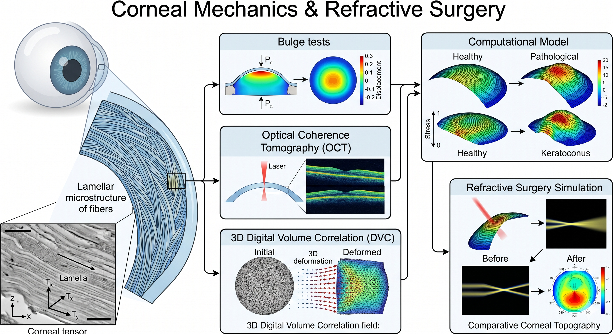
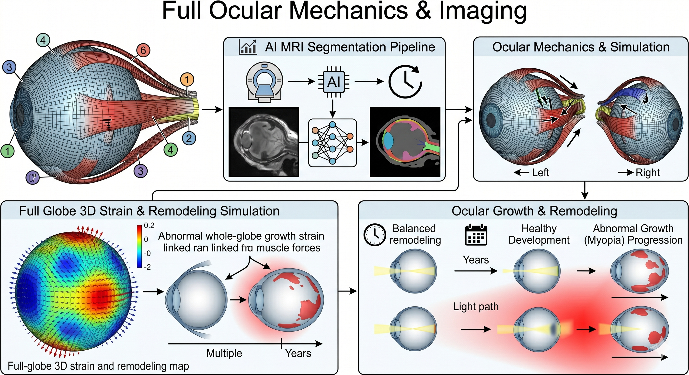
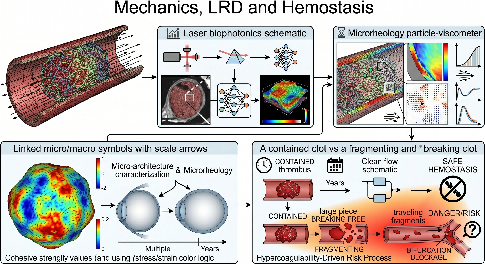
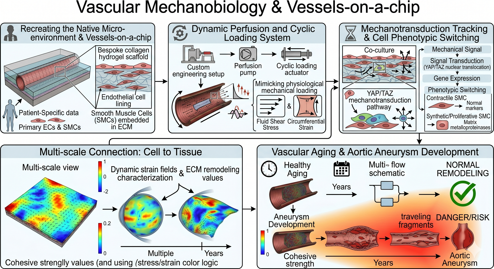
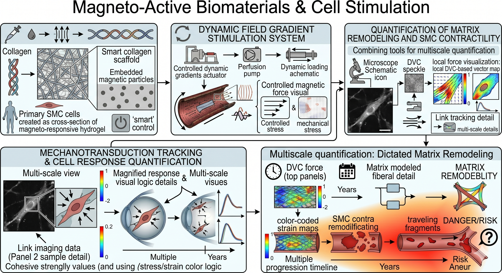
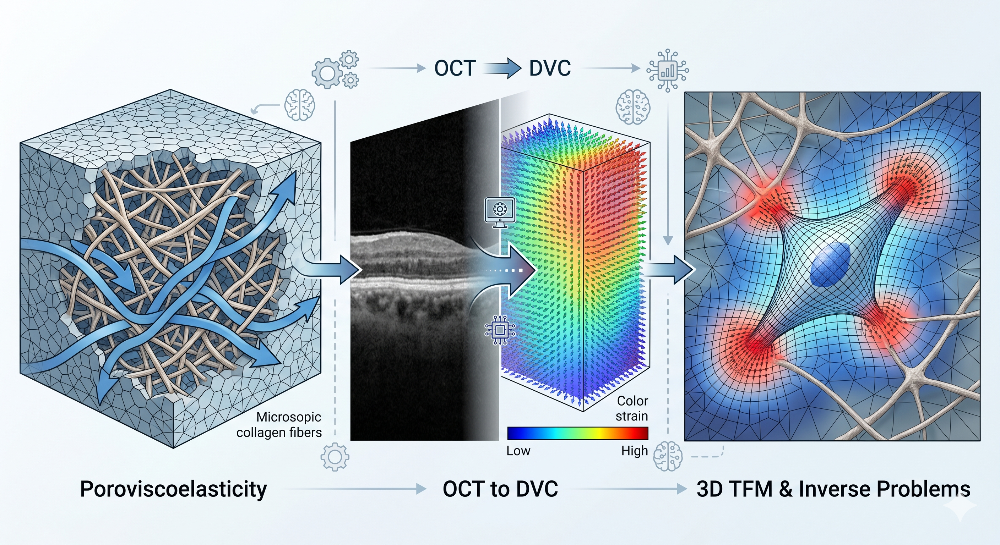

Research Activities
Our group specializes in the continuum mechanics of soft, living, and active materials. By bridging experimental characterization, advanced bioimaging, and state-of-the-art computational modeling, we tackle critical challenges in physiology, mechanobiology, and tissue engineering.

01 / 06 · Cornea
Corneal Mechanics & Refractive Surgery
We investigate the intricate lamellar microstructure of the healthy and pathological cornea to predict its response to surgical interventions and degenerative diseases. Our multiscale approach combines advanced experimental testing (bulge tests, Optical Coherence Tomography, and 3D Digital Volume Correlation) with custom, microstructure-informed finite element models to characterize anisotropy, structural gradients, and active collagen remodeling.
Key topics: Corneal Anisotropy OCT & DVC Imaging Refractive Surgery Simulation

02 / 06 · Ocular mechanics
Full Ocular Mechanics & Imaging
Beyond the cornea, we model the mechanical environment of the entire eye globe. This includes utilizing AI-based segmentation on MRI data to generate patient-specific meshes of the eye and extraocular muscles. By simulating muscular contraction, we characterize the influence of eye movements on long-term ocular growth, remodeling, and the epidemic progression of myopia during childhood, paving the way for medical optics interventions.
Key topics: Extraocular Muscles & Myopia AI MRI Segmentation Growth & Remodeling

03 / 06 · Blood clots
Mechanics of Blood Clots & Hemostasis
Understanding the mechanics of thrombus formation and dissolution is crucial for diagnosing and tackling cardiovascular diseases. By coupling solid mechanics with advanced optical tools (biophotonics), we characterize the 3D microstructural architecture and microrheology of venous blood clots. Our multiscale approach quantifies fibrin network hypercoagulability to predict clot stability and embolization risks under physiological conditions.
Key topics: Venous Microrheology Thrombus Visco-hyperelasticity Hypercoagulability

04 / 06 · Vessels-on-a-chip
Vascular Mechanobiology & Vessels-on-a-Chip
To recreate the native cellular microenvironment, we develop in vitro vascular platforms (vessels-on-a-chip) utilizing bespoke collagen hydrogels. These platforms allow us to study the patient-specific mechanobiology of human primary Smooth Muscle Cells (SMCs) and Endothelial Cells. By engineering dynamic cyclic perfusion systems, we mimic physiological mechanical loading and track mechanotransduction pathways—such as YAP/TAZ—that drive vascular aging, phenotypic switching, and aortic aneurysms.
Key topics: Vessels-on-a-chip Patient-Specific Mechanobiology Endothelial Crosstalk

05 / 06 · Magneto-active biomaterials
Magneto-Active Biomaterials & Cell Stimulation
To isolate the effect of 3D mechanical stress on cellular behavior, we engineer smart, magneto-responsive hydrogels. By embedding magnetic nanoparticles (Fe3O4) within collagen matrices, we can apply highly controlled, dynamic field gradients to stimulate resident cells. Coupled with multiphoton microscopy and Digital Volume Correlation, this novel platform allows us to precisely quantify how local mechanical forces dictate matrix remodeling and SMC contractility.
Key topics: Magneto-responsive Hydrogels Matrix Remodeling

06 / 06 · Methods
Soft Matter Mechanics & Advanced Numerical Methods
We push the boundaries of computational mechanics to decipher complex biological interactions. Our work includes multi-scale poroviscoelastic modeling of living tissues and hydrogels, capturing the dynamics of interstitial fluid and fibrillar architectures. By coupling 3D Digital Volume Correlation (DVC) on high-resolution OCT images with inverse problem frameworks, we successfully map local tissue deformations. This fuels our pioneering work in 3D Traction Force Microscopy (TFM), allowing us to measure the exact micromechanical stresses exerted by cells within their 3D native environment.
Key topics: 3D Traction Force Microscopy Poroviscoelasticity Inverse Problems